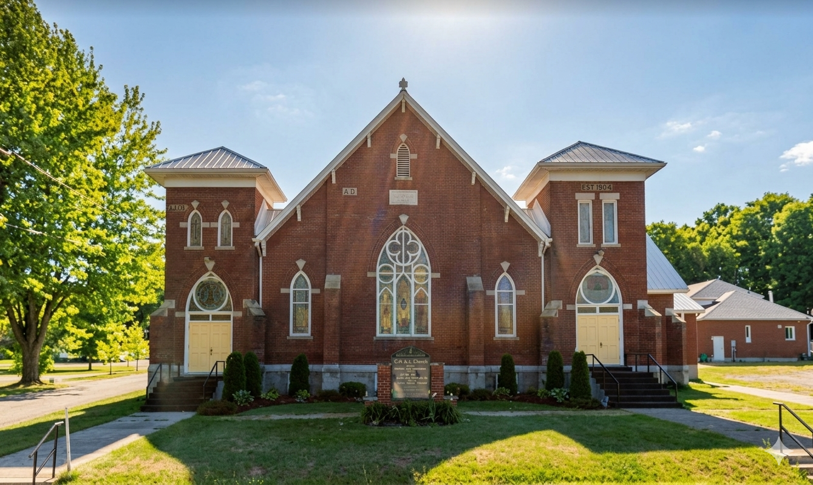

A community of faith
Osgoode Baptist and Vernon United Church is a joint congregation rooted in over 185 years of worship, service, and fellowship in the Osgoode Settlement of rural eastern Ontario. Whether you are visiting, searching, or seeking a church home, you are welcome here.
Join us on Sunday mornings for worship, music, and a warm welcome. Come as you are — you belong with us.

Our Mission
The mission of the Osgoode Baptist and Vernon United Church is to love and worship God while we welcome, love, teach, and challenge people to become God’s faithful followers. In obedience to God’s Word we will reach out and invite others to obey and serve Jesus as Lord.
Get involved
Sunday Worship
Sundays, 11:00 AM – 12:00 PM. Join us for scripture, prayer, music, and community.
Weekly at OBVU
“Prayer Matters – Come and Talk with God” in McLaurin Hall, Sundays 10:00–10:30 a.m. All welcome.
Events
Upcoming services, gatherings, and community events at OBVU and around Vernon.